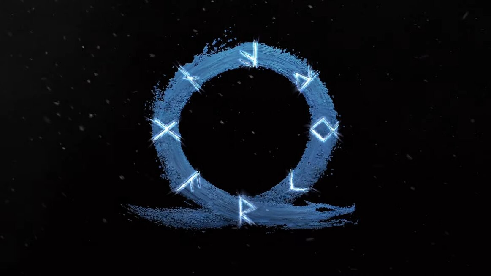
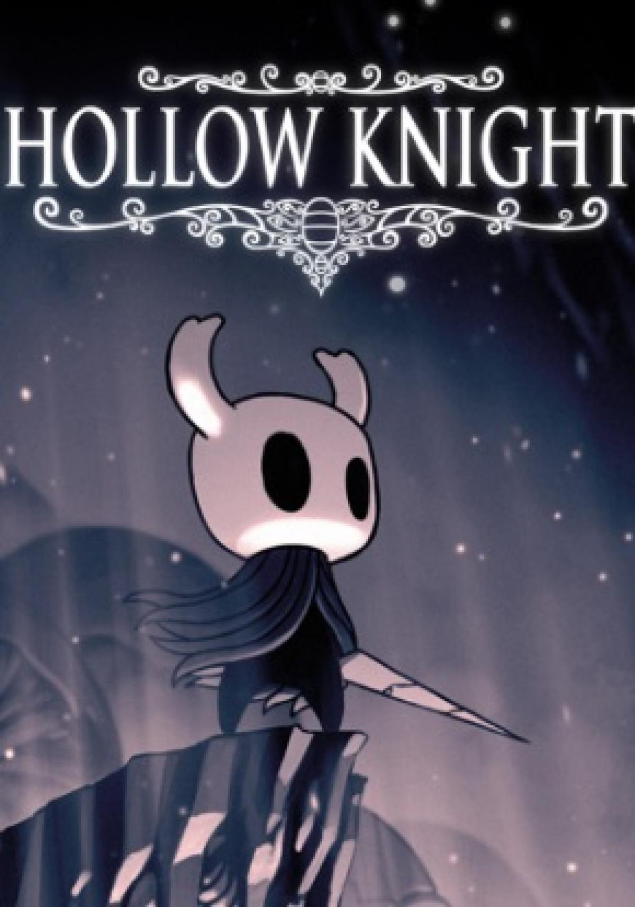
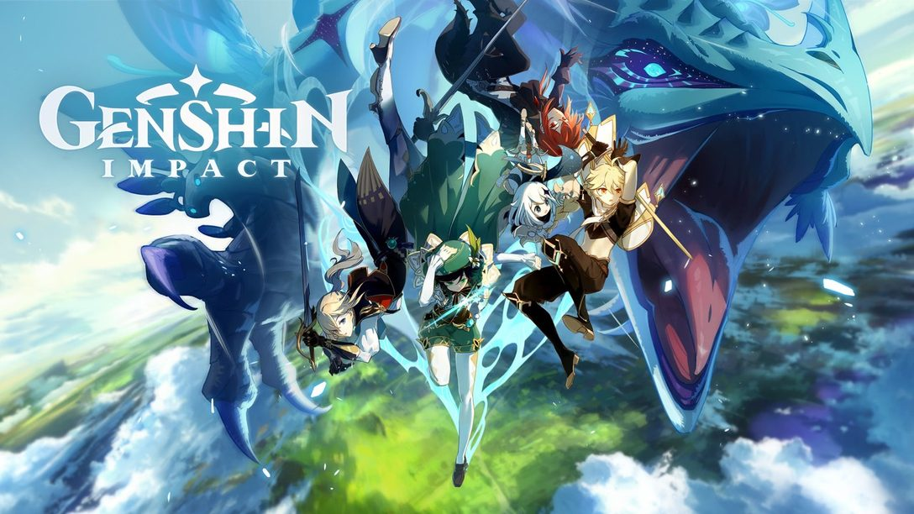

God of War Ragnarok
Tras convertirse en uno de los mayores reclamos de la familia PlayStation, la saga God of War vuelve con el nuevo God of War Ragnarok para PS5 y, con ello, la continuación de la historia de Kratos y su hijo Atreus por parte de Sony Santa Monica.
Seguir leyendo

Hollow Knight
Debajo de la desvanecida ciudad de Dirtmouth se encuentra un vasto y antiguo reino. Muchos están atraídos debajo de la superficie, en busca de riquezas, gloria o respuestas a viejos secretos.
Como el enigmático Caballero, atravesarás las profundidades, desentrañarás sus misterios y conquistarás sus males.
Seguir leyendo

Genshin Impact
Embárcate en un viaje a través de Teyvat para encontrar a tu familiar perdido y buscar respuestas de Los Siete, los dioses elementales. Explora cada rincón de este mundo maravilloso, une fuerzas con un amplio repertorio de personajes y revela los muchos misterios ocultos que esconde Teyvat.
Seguir leyendo